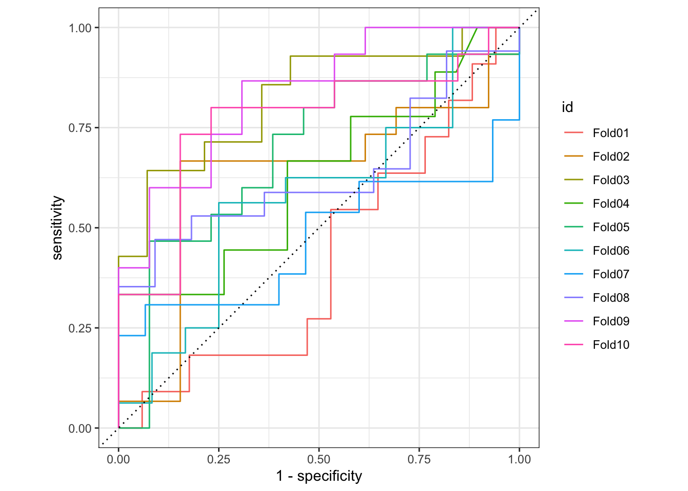
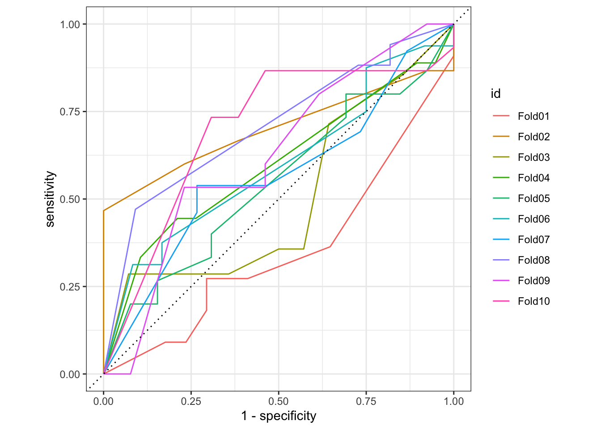
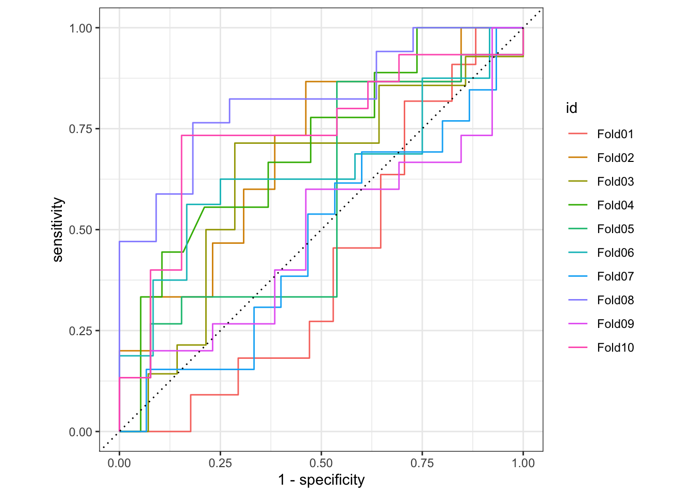
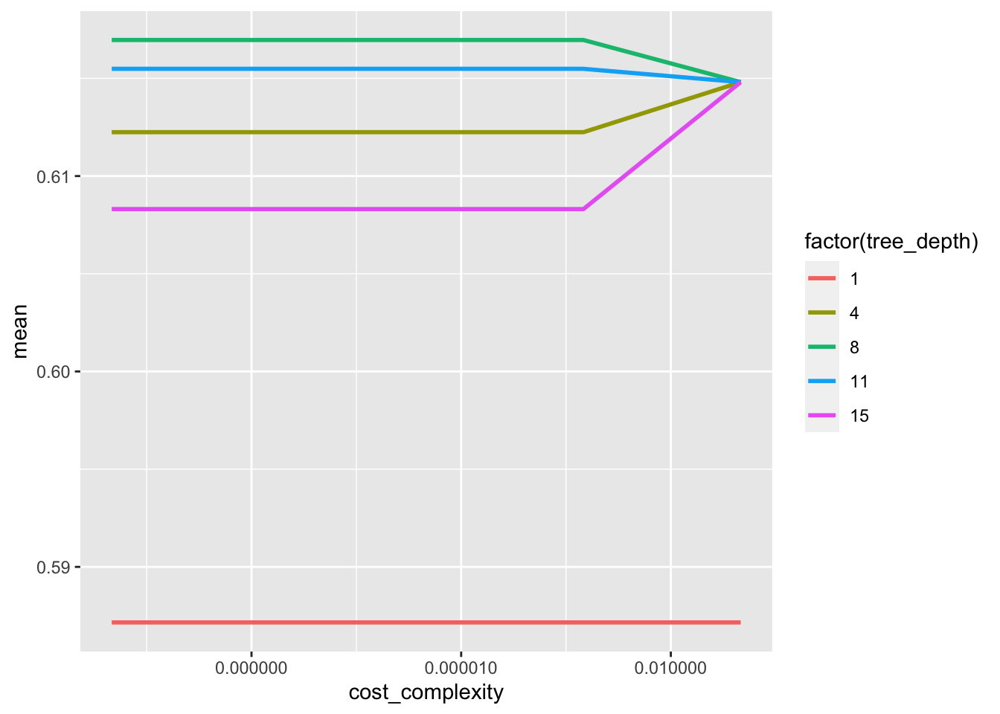
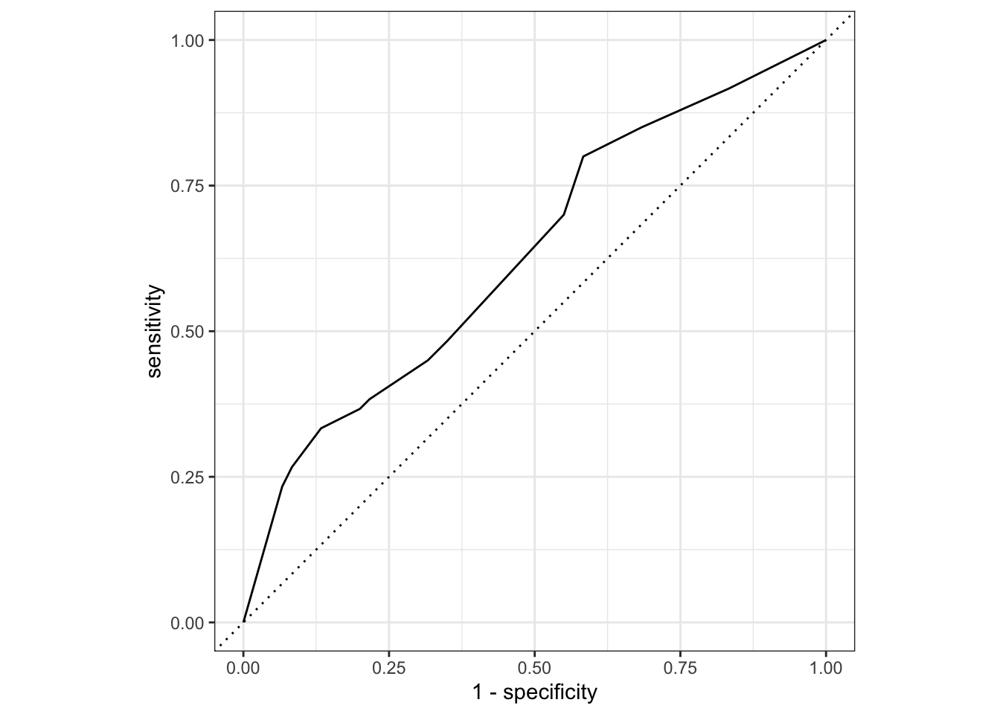
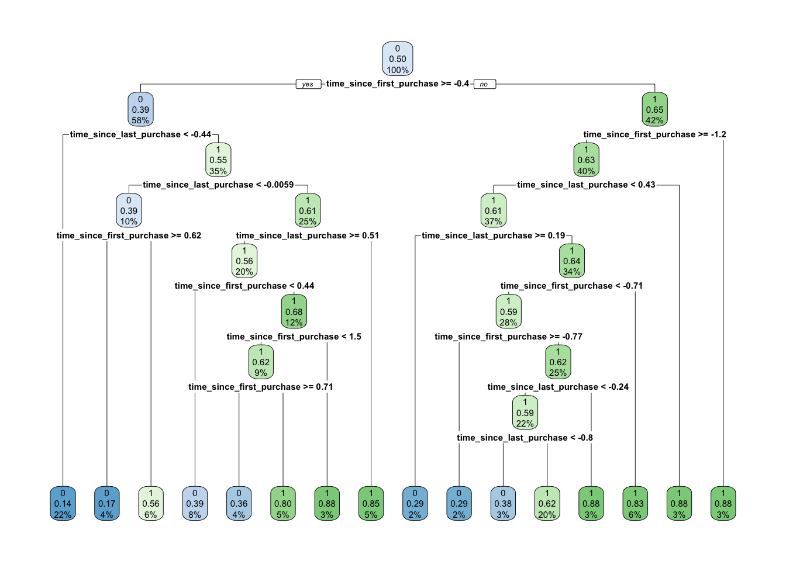
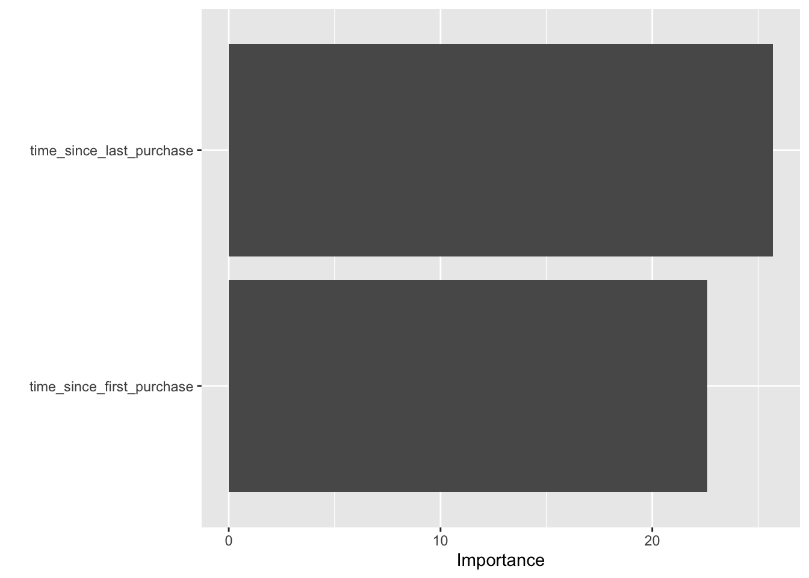

Tutorial 6 - Classificação com Tidymodels
Carregando os dados
Vamos usar um dataset sobre churn.
library(tidyverse)
library(tidymodels)
library(fst)
library(knitr)
churn <- read_fst("data6/churn.fst")
churn$has_churned <- as_factor(churn$has_churned)set.seed(1212)
split <- initial_split(churn, prop = 0.7, strata = has_churned)
train <- training(split)
test <- testing(split)Feature Engineering
Para aprimorar a robustez das nossas estimações, iremos usar um procedimento denominado k-fold cross validation ou validação cruzada. Neste procedimento, os dados de treino são subdivididos aleatoriamente em treino e teste e seus parâmetros de acurácia são calculados. Este procedimento é repetido ‘k’ vezes de forma que sejam calculados os parâmetros de acurácia de cada ‘k’. Uma vez que o procedimento é completado (ajustando o modelo a cada ‘k’ subdataset de treino e teste), calcula-se a média de todos os parâmetros de acurácia. Mais detalhes aqui.
fold <- vfold_cv(train)
rec <- recipe(has_churned ~ ., data = train) %>%
step_dummy(all_nominal(), -all_outcomes()) %>%
step_normalize(all_numeric())
wf <- workflow() %>%
add_recipe(rec)Treinamento dos modelos
Vamos treinar um modelo de Regressão Logística (usando glm), logo um de Árvore de Decisão (usando rpart) e finalmente um de Random Forest (usando ranger)
glm_spec <- logistic_reg() %>%
set_engine("glm")
tree_spec <- decision_tree() %>%
set_engine("rpart") %>%
set_mode("classification")
rf_spec <- rand_forest(trees=1000) %>%
set_engine("ranger") %>%
set_mode("classification")Regressão Logística
Segue os resultados do modelo de Regressão Logística:
doParallel::registerDoParallel()
logreg <- wf %>%
add_model(glm_spec) %>%
fit_resamples(resamples=fold,
control=control_resamples(save_pred=TRUE))collect_metrics(logreg) %>%
kable()| .metric | .estimator | mean | n | std_err | .config |
|---|---|---|---|---|---|
| accuracy | binary | 0.6357143 | 10 | 0.0309524 | Preprocessor1_Model1 |
| roc_auc | binary | 0.6497342 | 10 | 0.0435525 | Preprocessor1_Model1 |
| sensitivity | binary | 0.5311459 | 10 | 0.0570226 | Preprocessor1_Model1 |
| specificity | binary | 0.7235152 | 10 | 0.0452038 | Preprocessor1_Model1 |
logreg %>%
conf_mat_resampled() %>%
kable()| Prediction | Truth | Freq |
|---|---|---|
| 0 | 0 | 7.7 |
| 0 | 1 | 3.9 |
| 1 | 0 | 6.3 |
| 1 | 1 | 10.1 |
logreg %>%
collect_predictions() %>%
group_by(id) %>%
roc_curve(has_churned, .pred_0) %>%
autoplot()
Árvore de Decisão
Vamos treinar o modelo:
tree <- wf %>%
add_model(tree_spec) %>%
fit_resamples(resamples=fold,
control=control_resamples(save_pred=TRUE))Segue os resultados do modelo de Árvore de Decisão:
collect_metrics(tree)# A tibble: 4 × 6
.metric .estimator mean n std_err .config
<chr> <chr> <dbl> <int> <dbl> <chr>
1 accuracy binary 0.582 10 0.0261 Preprocessor1_Model1
2 roc_auc binary 0.590 10 0.0343 Preprocessor1_Model1
3 sensitivity binary 0.479 10 0.0582 Preprocessor1_Model1
4 specificity binary 0.680 10 0.0416 Preprocessor1_Model1tree %>%
conf_mat_resampled()# A tibble: 4 × 3
Prediction Truth Freq
<fct> <fct> <dbl>
1 0 0 6.8
2 0 1 4.5
3 1 0 7.2
4 1 1 9.5tree %>%
collect_predictions() %>%
group_by(id) %>%
roc_curve(has_churned, .pred_0) %>%
autoplot()
Random Forest
Vamos treinar o modelo:
rf <- wf %>%
add_model(rf_spec) %>%
fit_resamples(resamples=fold,
control=control_resamples(save_pred=TRUE))Segue os resultados do modelo do Random Forest:
collect_metrics(rf)# A tibble: 4 × 6
.metric .estimator mean n std_err .config
<chr> <chr> <dbl> <int> <dbl> <chr>
1 accuracy binary 0.582 10 0.0333 Preprocessor1_Model1
2 roc_auc binary 0.619 10 0.0409 Preprocessor1_Model1
3 sensitivity binary 0.545 10 0.0554 Preprocessor1_Model1
4 specificity binary 0.621 10 0.0438 Preprocessor1_Model1rf %>%
conf_mat_resampled()# A tibble: 4 × 3
Prediction Truth Freq
<fct> <fct> <dbl>
1 0 0 7.7
2 0 1 5.4
3 1 0 6.3
4 1 1 8.6rf %>%
collect_predictions() %>%
group_by(id) %>%
roc_curve(has_churned, .pred_0) %>%
autoplot()
Tuning de Modelos
O processo de tuning serve para procurar por valores para os parâmetros de um modelo de machine learning, que gerem a melhor previsão possível.
Cada modelo de machine learning tem seus próprios parâmetros, por exemplo, para árvores de decisão, alguns dos parâmetros são o cost complexity e a tree_depth já para um modelo de random forest, os principais parâmetros são o mtry, e o trees (número de árvores).
Para encontrar os parâmetros para o modelo que você está usando acesse o site do tidymodels com uma tabela dinâmica que ajuda na busca aqui.
Árvore de Decisão
Vamos melhorar a precisão do nosso modelo utilizando o procedimento conhecido como autotune com dois parâmetros: cost_complexity e tree_depth.
tune_spec <-
decision_tree(
cost_complexity = tune(),
tree_depth = tune()
) %>%
set_engine("rpart") %>%
set_mode("classification")Agora precisamos criar uma grid para o algoritmo procurar os melhores valores para os parâmetros mencionados anteriormente.
tree_grid <- grid_regular(cost_complexity(),
tree_depth(),
levels = 5)Como temos dois parâmetros para tuning, o tree_grid retornará 25 valores, 5 para cada parâmetro.
tree_grid# A tibble: 25 × 2
cost_complexity tree_depth
<dbl> <int>
1 0.0000000001 1
2 0.0000000178 1
3 0.00000316 1
4 0.000562 1
5 0.1 1
6 0.0000000001 4
7 0.0000000178 4
8 0.00000316 4
9 0.000562 4
10 0.1 4
# ℹ 15 more rowsAgora vamos treinar nosso modelo, criando também previsões com validação cruzada.
tree_tune <- wf %>%
add_model(tune_spec) %>%
tune_grid(resamples = fold,
grid = tree_grid)tree_tune %>%
collect_metrics() %>%
filter(.metric == "roc_auc") %>%
ggplot(aes(cost_complexity, mean, color = factor(tree_depth)))+
geom_line(linewidth = 1)+
scale_x_log10(labels = scales::label_number())
O modelo que teve melhor desempenho foi o que tem a linha mais alta (tree_depth = 8), podemos conferir esse resultado com a função show_best():
tree_tune %>%
show_best()# A tibble: 5 × 8
cost_complexity tree_depth .metric .estimator mean n std_err .config
<dbl> <int> <chr> <chr> <dbl> <int> <dbl> <chr>
1 0.0000000001 8 roc_auc binary 0.617 10 0.0330 Preprocesso…
2 0.0000000178 8 roc_auc binary 0.617 10 0.0330 Preprocesso…
3 0.00000316 8 roc_auc binary 0.617 10 0.0330 Preprocesso…
4 0.000562 8 roc_auc binary 0.617 10 0.0330 Preprocesso…
5 0.0000000001 11 roc_auc binary 0.615 10 0.0361 Preprocesso…Por fim, podemos escolher automaticamente os dois melhores valores para nossos parâmetros utilizando a função select_best():
best_tree <- tree_tune %>%
select_best("roc_auc")
best_tree# A tibble: 1 × 3
cost_complexity tree_depth .config
<dbl> <int> <chr>
1 0.0000000001 8 Preprocessor1_Model11Agora podemos atualizar nosso objeto de workflow com os valores obtidos por select_best():
final_tree_wf <- wf %>%
add_model(tune_spec) %>%
finalize_workflow(best_tree)Agora podemos calcular os indicadores nos dados de teste, para isto, utilizamos a função last_fit() que automaticamente reconhece o dataset de teste no objeto split
final_tree_fit <- final_tree_wf %>%
last_fit(split)
final_tree_fit %>%
collect_metrics()# A tibble: 2 × 4
.metric .estimator .estimate .config
<chr> <chr> <dbl> <chr>
1 accuracy binary 0.567 Preprocessor1_Model1
2 roc_auc binary 0.632 Preprocessor1_Model1final_tree_fit %>%
collect_predictions() %>%
roc_curve(has_churned, .pred_0) %>%
autoplot()
Uma vez finalizado o teste do modelo, podemos visualizar a arvore utilizando a função rpart.plot() do mesmo pacote.
library(rpart.plot)
final_tree_fit %>%
extract_fit_engine() %>%
rpart.plot()
E também podemos visualizar as variáveis mais importantes utilizando o pacote vip e a função vip():
library(vip)
final_tree_fit %>%
extract_fit_parsnip() %>%
vip()